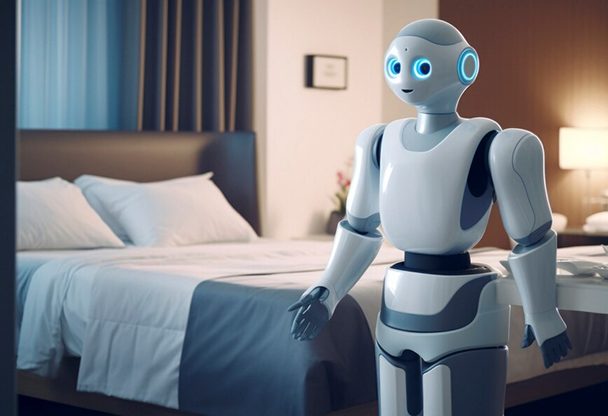

Robôs domésticos começam a ser adotados para tarefas diárias, prometendo mais conforto e eficiência nas residências.
Novo Smartphone Projetor 3D chega ao mercado, transformando a forma como vemos nossas telas!
Tecnologia 6G chega às metrópoles brasileiras, prometendo revolucionar a forma como vivemos e nos comunicamos.
Empresa lança relógio inteligente capaz de monitorar a saúde mental, oferecendo insights valiosos para o bem-estar pessoal.
Escolas adotam a tecnologia VR para proporcionar experiências imersivas, transformando a aprendizagem tradicional.
Mais lidas da semana
Ver tudo 
.png) Veículos
Veículos
Protótipo de veículo voador é apresentado, marcando o início da era dos transportes aéreos pessoais.
.png) Hologramas
Hologramas
Plataforma de videoconferência apresenta nova função de hologramas, tornando as chamadas virtuais mais realistas e envolventes.
.png) Realidade virtual
Realidade virtual
Nova geração de consoles de videogame é lançada, trazendo gráficos ultra-realistas e experiências de jogo totalmente envolventes.
.png) Internet
Internet